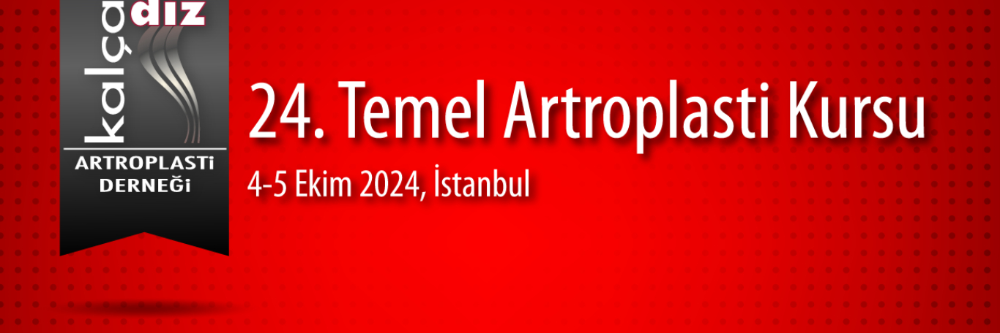

Değerli Meslektaşlarımız,
Kalça Diz Artroplasti Derneği olarak 4-5 Ekim 2024 tarihinde Acıbadem Maslak Hastanesinde 24. Temel Artroplasti Kursunu gerçekleştireceğiz. Kalça ve diz artroplastisi konusunda kendisini geliştirmek isteyen genç meslektaşlarımıza yönelik temel kursta teorik eğitimlerin yanında maketler üzerinde pratik uygulamalar ve yuvarlak masalarda interaktif vaka tartışmaları ile bilgi ve becerilerin güncellenmesi amaçlanmaktadır. Artroplasti alanında deneyimli eğiticiler ile pratik ve teorik tartışma imkanı elde edilmiş olacaktır.
İki gün sürecek olan kursumuzda; güncellenmiş, interaktif bir program planlanmıştır. Sizlerle deneyimlerimizi karşılıklı paylaşmaktan mutlu olacağız.
24. Temel Artroplasti Kursunda buluşmak üzere saygı sevgilerimizle.
Kalça Diz Artroplasti Derneği Başkanı: Prof. Dr. Emre Toğrul
Kurs Başkanı: Prof. Dr. Doğan Atlıhan
